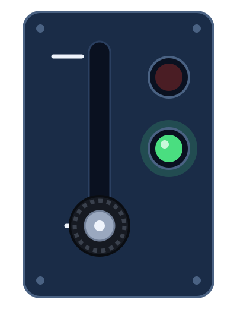
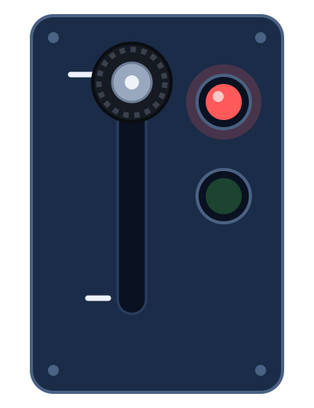
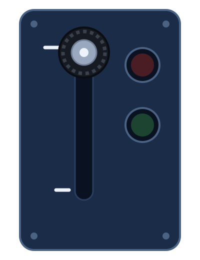
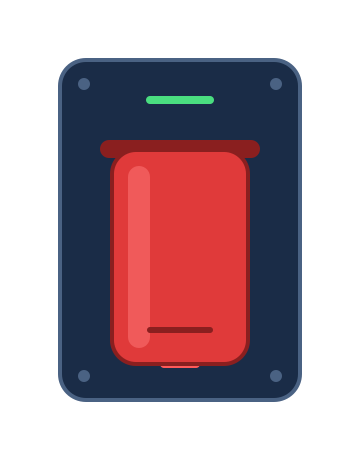
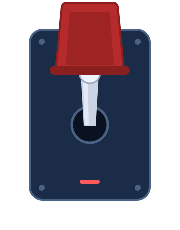
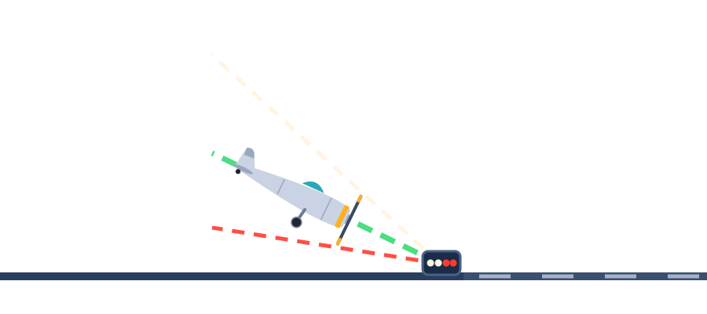
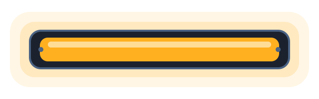
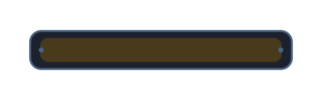
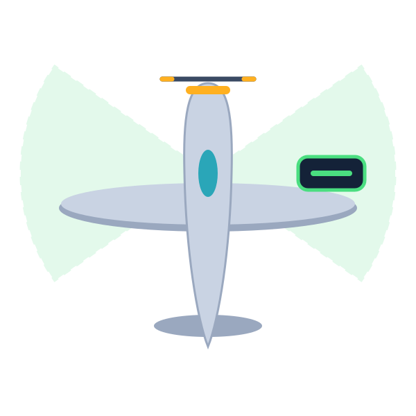

palanca_tren_abajo
La palanca con perilla de llanta, a la izquierda del tablero. Agárrala con el grip: arriba guarda las ruedas, abajo las saca.
4 luces a la izquierda de la pista que te dicen si bajas con el ángulo correcto para aterrizar.








